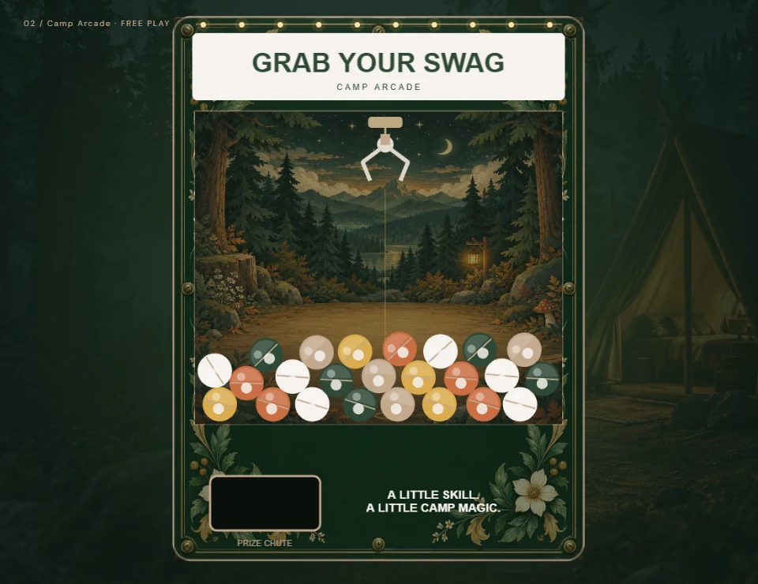
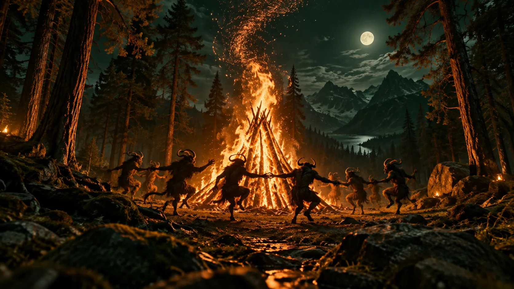
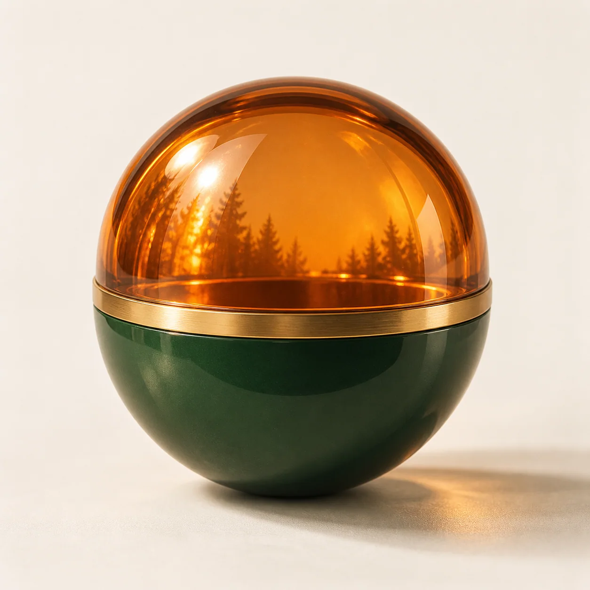

The cinematic collection / 19 experiences
Every trail leads
somewhere good.
Take the scenic route. Try the arcade. Stay for the stories. Each trail is a fresh take on Camp Kanahoma.

Start here
Welcome to camp.
The flagship campaign landing page.
Agency
The base camp
A considered introduction to brand, enrollment, and working together.

Experiment
Off the beaten path
A louder, more playful camp collage. Follow your curiosity.

Play / 3D
The camp cabinet
The flagship 3D claw experience. Aim in depth and make the catch.

Play / 2.5D
The illustrated arcade
A focused, front-facing claw game with sway and physical capsules.
Explore
Go bold(ering)
Find your foothold. Build the confidence to make the next move.
Interactive trail
Choose your line
A three-stop route through clearer campaign thinking.

Gather
Pull up a chair
Four conversation starters for the people doing the work.
Scroll experience
Stoke the fire
A little spark grows as you follow the story.

Spooky experiment
After-dark bonfire
An optional folklore detour with demons, fire, and a dramatic finish.

Spooky experiment
Find your way
Explore the night woods. Opt in to a werewolf encounter.
Three-question quiz
Build your campsite
Find a suggested route through AOR, Brand, or Consulting.
Read
Campfire stories
A scroll-through field note about turning a challenge into a next step.
Day & night
Morning light / Campfire
One landscape. Two very different perspectives.
Interactive tour
Tour the camp
Find the gathering place, field notes, and camp arcade.
Story notebook
Tell us your story
Draft the challenge on your mind. Nothing is sent or saved.

Details
Small sparks
Six little interactions that make the experience feel considered.
Wayfinding
A little off trail
Find your way back to camp.
A good reason to check your inbox
Fresh thinking.
A little camp swag.
Useful ideas for the people moving higher ed forward. Preview the newsletter signup and your camp store thank-you.
A little camp magic
Your sample store pass.

DEMO-CAMPSample code · not redeemable. This previews the free-item campaign experience.
Explore the store ↗